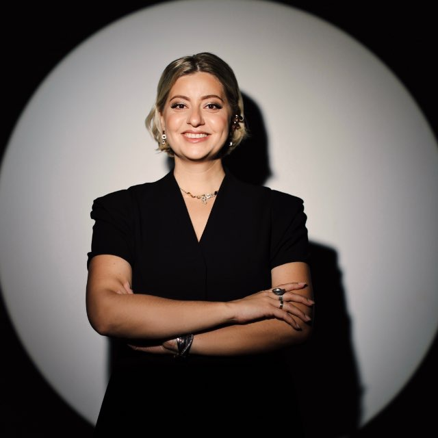

Ведущая и организатор мероприятий
Римма
Сковородникова
«Уютная, как плед, и родная, как объятия мамы»
11 лет веду и организую мероприятия разной концепции и масштаба. Более 550 торжеств.

Обо мне
Всё началось с лёгкой руки Александра Абрамовича Друзя. С тех пор я провела более 550 торжеств, а недавно открыла собственное агентство «ЗА ГРАНЬЮ».
- ВДНХ, январь 2024
- День Липецкой области в рамках выставки «Россия» в «Доме Российской Кухни».
- Телевидение и кино
- Проект «4 свадьбы» на телеканале «Пятница», участие в «Давай поженимся» на Первом канале, съёмки фильма «Живой» — ищите меня в титрах.
- «Моя большая свадьба»
- Вела выставку вместе с Владимиром Тулиновым.
- Журналистика
- Работала главным редактором, брала интервью у десятков российских звёзд и политиков.
- Ночной клуб
- Арт-директор: сотни диско-вечеринок.
- Обучение
- Сертификаты и дипломы тренингов, мастер-классов и форумов: продажи, психология, маркетинг.
ЗА ГРАНЬЮ
Агентство по организации мероприятий. Работаем в Воронеже, Липецке и Старом Осколе.
- Организация под ключ
- Берём праздник целиком: от идеи и сметы до последнего гостя.
- Консультации и частичная организация
- Подскажу, как выстроить день, и возьму на себя только нужные части.
- Координация
- Слежу за таймингом и подрядчиками в день события, чтобы вы отдыхали.
- Подбор подрядчиков
- Площадка, декор, фото, видео, музыка — подберу команду под ваш стиль и бюджет.
Формат подбираем под вас — всё обсуждаемо.
Свадьба под ключ. А что это вообще значит?
Для Алисы и Данилы этот день — про любовь, семью, близких людей, слёзы, смех, объятия и их первое семейное «МЫ». А для меня он начался задолго до 3 июля.

- Визажист для невесты
- Банкетный зал
- Декор и оформление
- Транспорт для гостей
- Ведущий и DJ
- Звуковое и световое оборудование
- Тяжёлый дым
- Фотограф
- Видеограф
- Кавер-группа
- Фейерверки
- Координация
- Торт
- Выездная церемония
- Тайминг
- Договорённости
- Контроль
- И ещё миллион мелочей
Выездная церемония — от сценария до того самого момента, когда папа передаёт руку дочери жениху. Это то, чего в итоге не должны замечать ни молодожёны, ни гости.
И знаете, что для меня главный показатель хорошо организованной свадьбы? Когда за кадром было огромное количество работы… а в кадре остались только счастливые люди.
Алиса и Данила, спасибо за доверие самого важного дня. Чистозвоновы, 03.07.2026 — ещё одна семья, к появлению которой я и команда «ЗА ГРАНЬЮ» немножечко причастна.
Обсудим ваш праздник
Напишите в ВК или MAX — отвечу и предложу формат.
+7 915 552-45-90